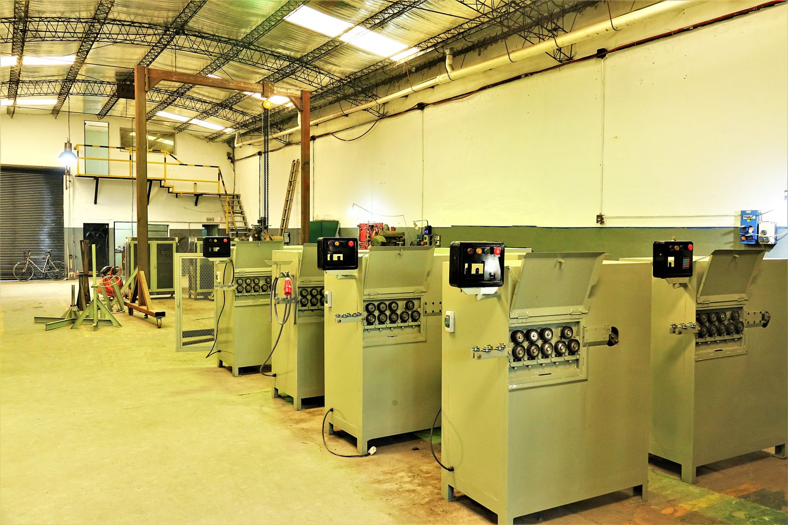

Inicio / Nosotros
Nosotros
Diseñamos y fabricamos en Argentina
Máquinas enderezadoras y dobladoras de alambre y alambrón, pensadas para durar y para producir.
Somos una empresa argentina dedicada al diseño, desarrollo y fabricación de máquinas enderezadoras y dobladoras de alambres y alambrones.
Día a día trabajamos en la mejora continua de nuestros productos, innovando en las tecnologías actuales y dándoles siempre la mayor robustez que le permita soportar las más altas exigencias.
Nuestros productos se caracterizan por tener una larga vida útil.
Para más información podés contactarnos sin compromiso por cualquiera de los siguientes medios:
